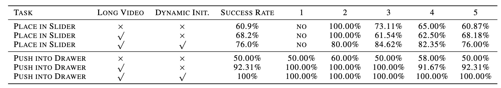
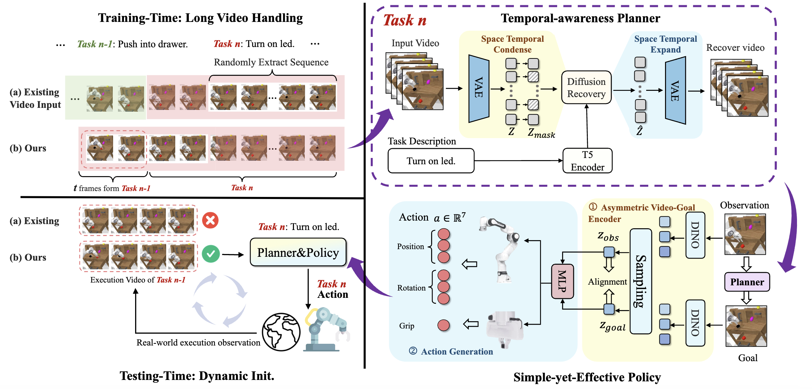

In the domain of robot control, most existing methods generate future actions by integrating observable multimodal information into Vision-Language-Action (VLA) models. Many recent high-performing methods enhance this framework by introducing predicted future images as auxiliary guidance. However, the role of video generation in this context remains underexplored. In this work, we decouple video generation from policy learning and conduct detailed analyses, leading to key insights and the conclusion: predicting future images is important for effective control. Based on this, we propose a novel architecture, Video Generation Visual-Language-Action (VGVLA), which optimizes video generation for control tasks. With a simple yet effective policy, VGVLA achieves strong performance. In our framework, the planner uses Sora to generate third-person future action videos, while the policy predicts accurate intermediate actions using only current third-person RGB images and generated future images. On the CALVIN ABC→D benchmark, our method improves performance by 31% and achieves an average sequence length of 4.31 on ABCD→D, setting a new state-of-the-art among RGB-only methods. These results validate our conclusions and highlight the potential of integrating video generation into VLA models for robot control.
High-level planning plays a more important role than low-level control.
With an accurate policy, emphasizing temporal consistency during both training and inference in planner is crucial for success.


Combined video { Left: real robot execution | Right: video generated by Sora.}
Demonstration of Spatial Generalization: The robot successfully picks up the yellow block from different positions.
Dataset: 200 episodes
Demonstration of object Generalization: The robot successfully put different objects into the bowl.
Dataset: yellow duck: 50 episodes | yellow block: 200 episodes | blue block: 50 episodes
Video captured by phone, played at 1x speed.
Demonstration of color Generalization: The robot successfully put different color blocks into the bowl.
Dataset: blue block: 50 episodes | orange block: 200 episodes | red block: 50 episodes
Dataset: yellow block: 50 episodes | purple block: 200 episodes | green block: unseen